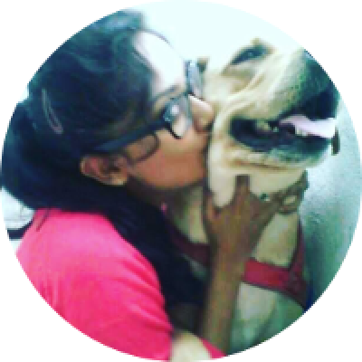
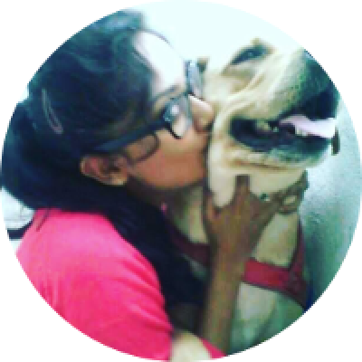

I have been closely associated with WSA for about two years now and I have got to see Praveen's passion and dedication for the voiceless first hand. No matter the time of the day or place, if he can help an animal or a human in distress, he will do it. There is absolutely no second thoughts or doubts about that! I have seen him nurse & nurture back to health, many fatally injured and diseased animals upon whom even the vets had given up on and had suggested euthanasia. Today these animals are a living testimony to how unflinching care and compassion can make miracles happen and Praveen has made a lot of such miracles happen at his shelter. It gives me a great sense of satisfaction to be associated with WSA. A visit to this shelter puts a big smile on my heart, the very sight of animals who seem to be leading a "happily ever after" lives came here when they were battling for their very existence!I thank Praveen for this noble cause he has taken up, something for which he has made many unimaginable sacrifices in his own life. Its a service not just to the animals in need but for humanity.Keep doing this Gods work, Praveen. May the compassion and love you exude for our fellow earthlings return to you multifold.
 Tejaswini 
Tejaswini  I have visited WSA shelter with my friends and family every year. This shelter is a temple for many dogs who are hurt and can't be on the streets. I feel WSA shelter is not just any shelter. Unlike others where the animals are caged, here, they roam freely and happily. Praveen is doing a good job keeping them free. All the animals enjoy their freedom with good, healthy food and a clean environment. The staff is very helpful too.Praveen is doing a really good job. He is a Godfather for the animals.
Tharinisiri LEAVE A REVIEW FOLLOW US
© 2023. We Save Animals(WSA) Trust.
All Rights Reserved.